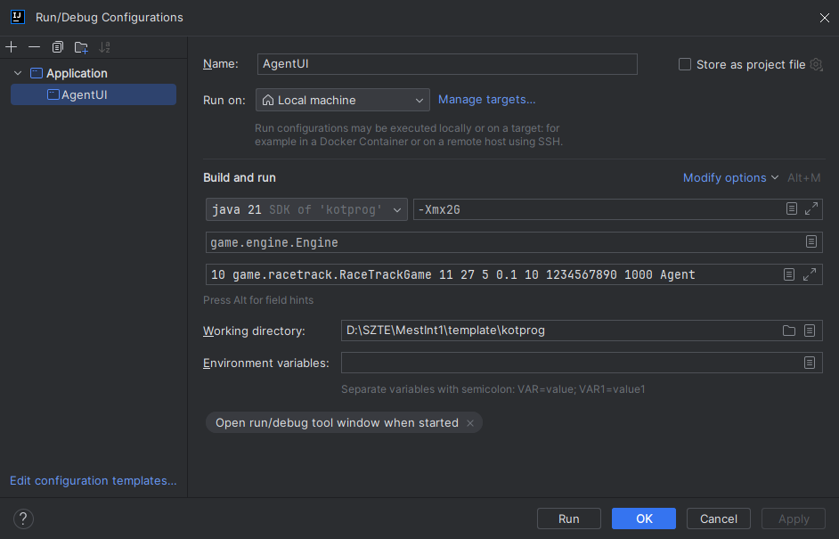

Mesterséges Intelligencia 1 - Kötelező program segédlet¶
Össze szedtem néhány tippet a keretrendszer használatához, amikel nagyon felgyorsíthatod a kötelező prgram megírását.
Setup¶
Ha nincs kedved ezzel vacakolni: Előre beállított IDEA projekt letöltése (V11.20)
- Hozz létre egy új projektet és másold bele benne a
libsmappába agame_engine.jarfájlt - IDEA-ban a
File/Project Structure.../Libraries/Add New Project Library/Javamenüpontban add hozzá agame_engine.jarfile-t - A
srcmappában hozz létre egyAgent.javaosztályt, aminek ez legyen a tartalma:
///Nicknevem,Vezeteknev.Keresztnev@stud.u-szeged.hu
import java.util.Random;
import game.racetrack.Direction;
import game.racetrack.RaceTrackGame;
import game.racetrack.RaceTrackPlayer;
import game.racetrack.utils.Coin;
import game.racetrack.utils.PlayerState;
public class Agent extends RaceTrackPlayer {
public Agent(PlayerState state, Random random, int[][] track, Coin[] coins, int color) {
super(state, random, track, coins, color);
}
@Override
public Direction getDirection(long remainingTime) {
return RaceTrackGame.DIRECTIONS[random.nextInt(RaceTrackGame.DIRECTIONS.length)];
}
}
Futtatás¶
A tanár azt javasolta az alábbi parancsokkal indítsuk terminálból az alkalmazást, de én találtam egy kényelmesebb megoldást is.
# Fordítás:
javac -cp game_engine.jar Agent.java
# Futtatás grafikus felülettel:
java -Xmx2G -jar game_engine.jar 5 game.racetrack.RaceTrackGame 11 27 5 0.1 10 1234567890 1000 Agent
Run Config beállítása InteliJ IDEA-ban¶
Be lehet állítani IDEA-ban, hogy egyetlen kattintással fordítsa és futtassa az alkalmazást. Ha nincs kedved ezzel vacakolni: Előre beállított IDEA projekt letöltése
Manuális módszer:
- Jobb felül a
Run / Debug configurationrésznél hozz létre egy új Application konfigurációt - Paraméterezd fel így (A Modify options alatt be kell kapcsolni az Add VM options-t): 
- A jobb felső sarokban a zöld háromszög ikonnal indul is az alkalmazás
{kind=link}
Debug¶
Ha eddig nem használtad volna az IDEA vagy bármelyik IDE debug módját, itt az ideje megismerkedned vele, mert ezzel a módszerrel gyorsan és egyszerűen rá lehet jönni mi a hiba egy programban. Plusz ahogy én látom ebben a keretrendszerben semmilyen más lehetőség nincs hiba keresésre.
Ha beállítottad IDEA-ban a Run Configot, csak dobj pár breakpoint-ot a kódba és a kis bogárka ikonnal debug módban fog indulni az app.
Keretrendszer Felépítése¶
Azt gondolom már észre vetted, hogy minden forráskód, futtatható állomány és dokumentáció egy .jar fájlba lett tömörítve. Ezt ugyan úgy ki lehet tömöríteni, mint egy .zip-et. A game/racetrack package-ben vannak az osztályok amiket használhatunk. Most csak bemutatom milyen eszközök állnak
rendelkezésünkre, a működésükről a forráskódban vagy a javadoc mappában olvashatsz bővebben.
RaceTrackPlayer osztály reprezentálja a pályát és az autót¶
Ennek az osztálynak hozzuk létre egy leszármazottját, mikor létre hozzuk a Agent-t.
Hasznos osztály változói¶
PlayerState state: position and velocity of the playerint[][] track: represents the track of the gameCoin[] coins: list of coins on the track
Hasznos metódusai:¶
- Ez a konstruktora.
- Nem az ilyesztő paraméterei az érdekesek, hanem hogy csak egyszer fut le, így bele lehet írni az út kereső algoristmust.
- Minden iterációban meghívódik és kiszámol egy irányt amerre tovább fog menni az autó.
- Ezt kell felül definiállnunk a saját Player-ünkben, hogy vezethessük.
RaceTrackGame osztály - a segéd funkciók tárháza¶
Van egy rakás hasznos statikus metódusa, amik sokat segíthetnek. Példányosítani sem kell az osztályt a használatukhoz:
Hasznos metódusai:¶
// Returns true iff the specified value contains the specified mask.
public static boolean mask(int value,int mask)
// Performs a breadth-first-search from the specified position on the specified track
// while one of a FINISH cell has been reached.
public static List<PathCell> BFS(int i,int j,int[][]track)
// Returns true, iff the cell of the specified track is not a wall at the specified position.
public static boolean isNotWall(int i,int j,int[][]track)
// Returns true, iff the specified cell of the specified track is not a wall.
public static boolean isNotWall(Cell cell,int[][]track)
// Returns true, iff none of the cells of specified list are walls on the specified track.
public static boolean isNeitherWall(List<Cell> list,int[][]track)
// Returns the coordinates of the line between the specified points.
// The line drawing algorithm is based on the Bresenham's line algorithm
public static List<Cell> line8connect(Cell from,Cell to)
// Returns the coordinates of the line between the specified points, but the line
// is 4-connected instead of 8. The line drawing algorithm is based on the Bresenham's line algorithm
public static List<Cell> line4connect(Cell from,Cell to)
//Returns a negative integer, zero, or a positive integer as specified cell (i,j)
// is on the right site, on, or on the left side of the line specified by A-B po[ints (ai,aj)-(bi,bj)
public static int side(int ai,int aj,int bi,int bj,int i,int j)
// Returns the list of cells which are crossed or touched (its corner is on the line)
// by the line defined by the specified coordinates.
public static List<Cell> lineCrossing(Cell from,Cell to)
// Returns the manhattan distance between the specified positions.
public static int manhattanDistance(Cell a,Cell b)
// Returns the euclidean distance between the specified positions.
public static double euclideanDistance(Cell a,Cell b)
// Returns a direction object from the specified cell to the other specified one.
public static Direction direction(Cell from,Cell to)
// Converts the position of the specified state to a Cell object.
public static Cell toCell(PlayerState state)
// Converts the position of the specified players to a Cell object.
public static Cell toCell(RaceTrackPlayer player)
game/utils - modell osztályok¶
Ebben package-ben modell osztályokat találhatsz, amikkel a fentebbi metódusokat használhatod.